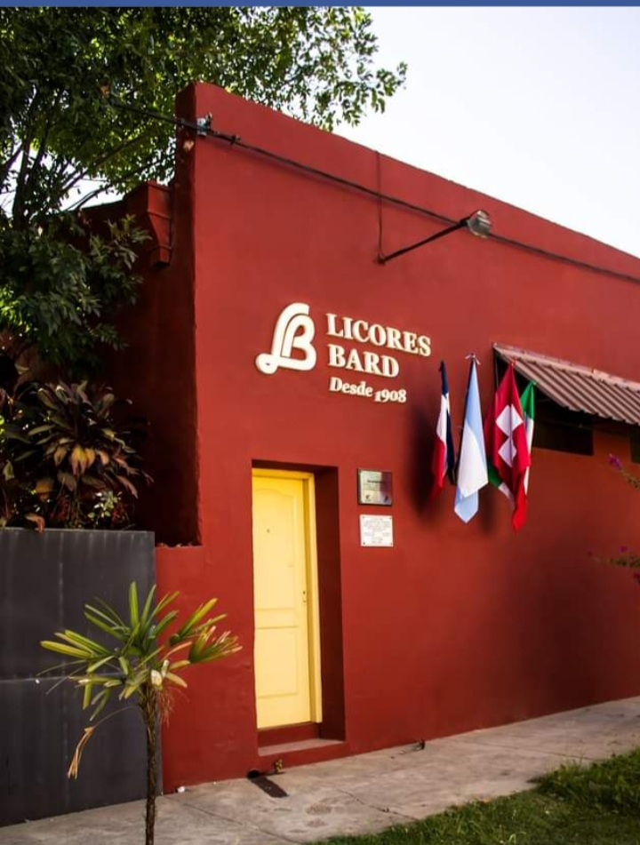
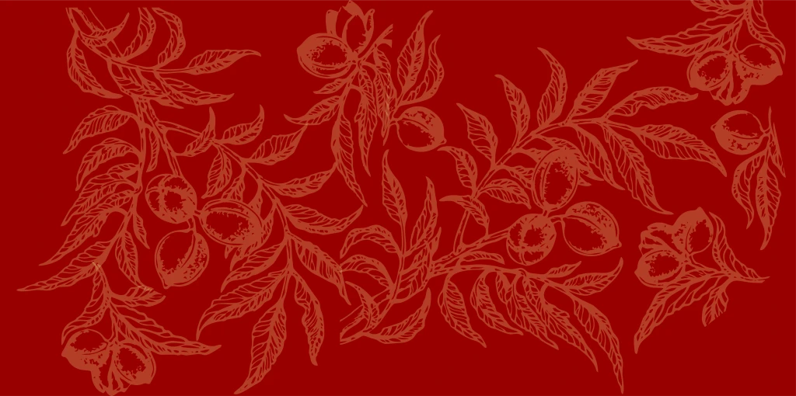
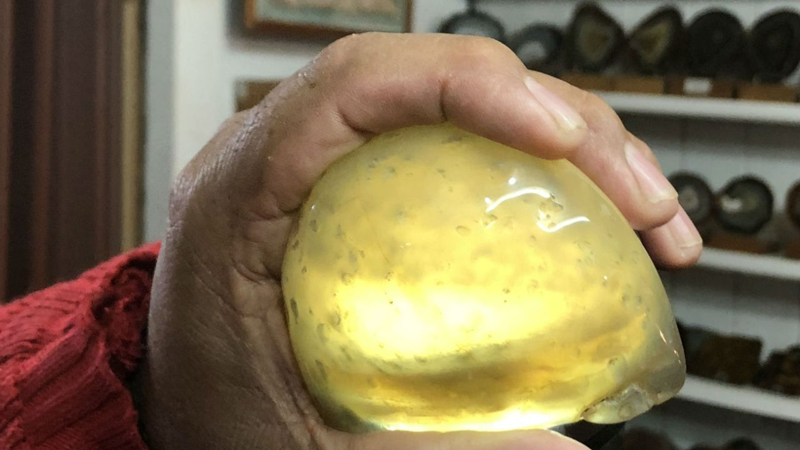
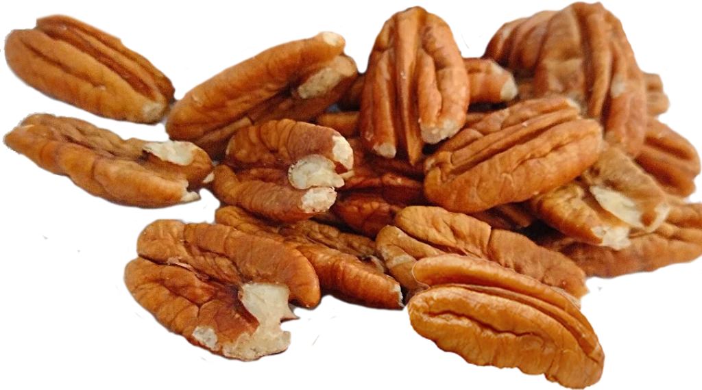
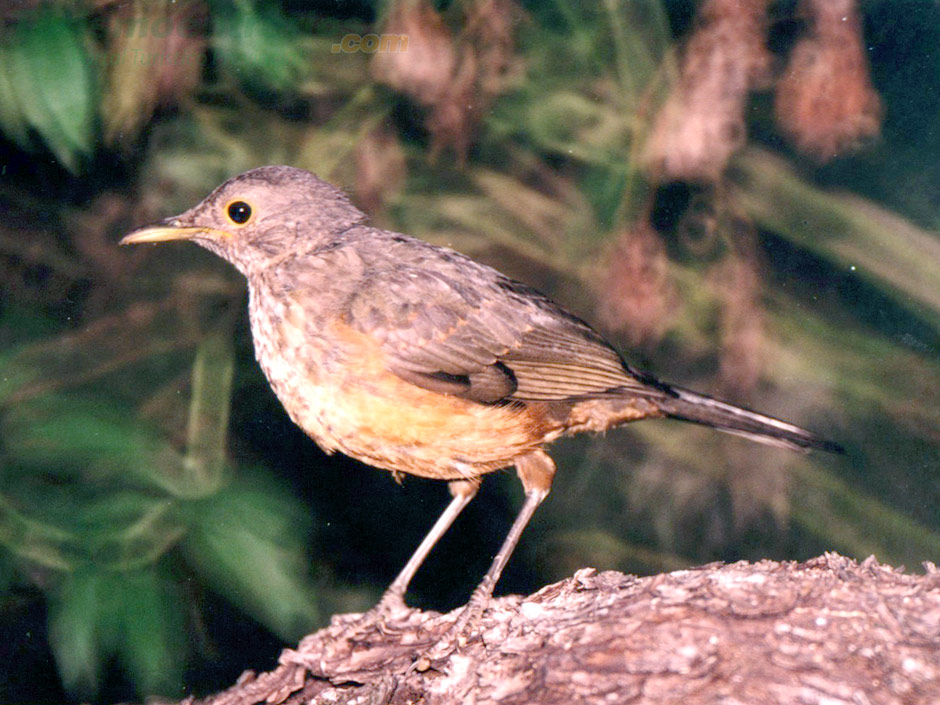
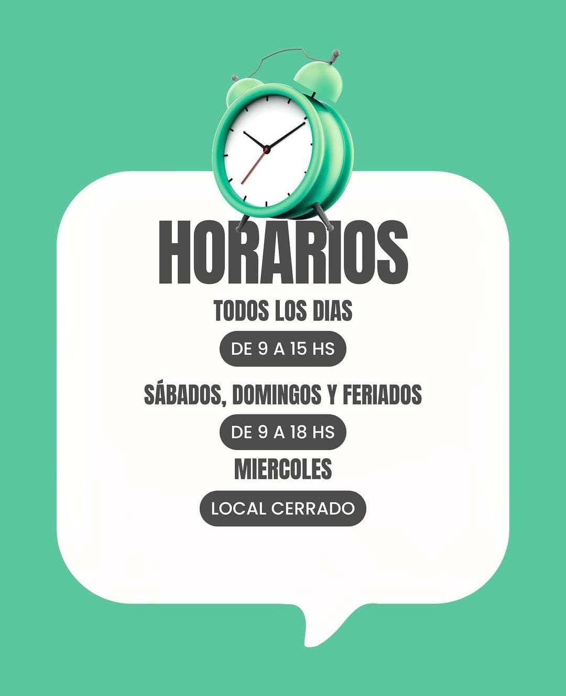
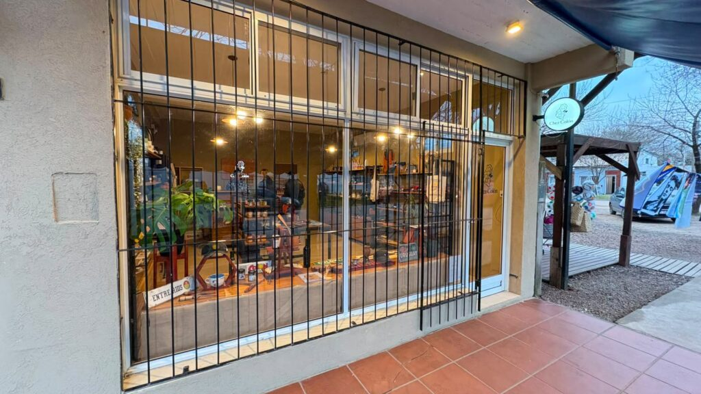
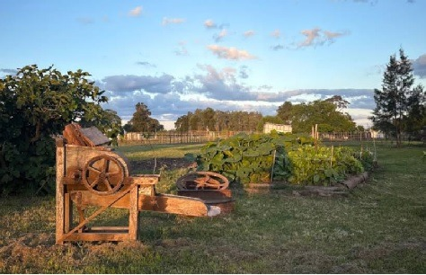

Municipalidad de San José
Secretaría de Educación, Cultura y Turismo • Entre Ríos
INFORME TÉCNICO-LEGISLATIVO & DIAGNÓSTICO
Programa de Fomento y Promoción «Hecho en San José»: Mapa Productivo Georreferenciado, Catálogo de Identidad y Articulación del Consumo de Cercanía
Fundamentos y Diagnóstico Estratégico
La Ciudad de San José posee una rica tradición forjada a partir del arribo de los primeros colonos en 1857, manifestada hoy en una matriz productiva singular que combina agroindustria familiar, plantaciones de nuez pecán de vanguardia, licorería artesanal centenaria, apicultura de monte nativo, queserías de colonia, vitivinicultura emergente y una tradición inquebrantable de cuchillería y artesanías regionales en fibra de yatay.
Históricamente, los pequeños productores locales y artesanos han enfrentado barreras de comercialización y visibilidad frente al flujo masivo de visitantes que ingresan por las Rutas Provinciales 26 y 130 y la Autovía Nacional 14. La dispersión territorial de los establecimientos hacía imperativa una herramienta integradora que permitiera al turista y al vecino localizar exactamente cada punto de elaboración, conocer los horarios de visita, interactuar vía WhatsApp y trazar su ruta punto a punto.
La iniciativa «Hecho en San José: Mapa Productivo» responde a esta necesidad mediante una solución de soberanía tecnológica: implementada íntegramente sobre tecnologías de código abierto (Leaflet.js y OpenStreetMap), eximiendo al erario público municipal del pago de cánones o suscripciones de plataformas privadas y garantizando disponibilidad continua e interoperabilidad inmediata con el portal oficial sanjose.tur.ar/hechoensanjose.
Tablero de Indicadores del Programa
Padrón Oficial de Establecimientos Relevados
A la fecha de elevación del presente documento, se encuentran plenamente verificados, georreferenciados y en línea los siguientes 11 establecimientos pioneros:
| Foto | N° | Establecimiento | Rubro / Especialidad | Dirección y Coordenadas | Contacto Directo | Horarios de Atención |
|---|---|---|---|---|---|---|
 |
01 | Licores Bard Desde 1908 |
Bebidas • Licores | Entre Ríos 1046, San José -32.20780, -58.22510 |
+54 9 3447 40-5163 WhatsApp Activo |
Lun a Sáb: 08:30 a 12:30 y 17:00 a 21:00 hs |
 |
02 | Establecimiento Los Pecanes Plantación Pionera |
Pecán & Té Campestre | Ruta 26 (RP 130) Km. 7 -32.20350, -58.20320 |
+54 9 3447 43-3929 WhatsApp Activo |
Mié a Dom: 10:00 a 20:00 hs (Visitas guiadas) |
 |
03 | De los Troncos Petrificados Selva Gayol |
Piedras & Minerales | RP 26 Km. 3,5 (B° Troncos Petrificados) -32.19801, -58.15484 |
+54 9 3447 46-4775 WhatsApp Activo |
Todos los días: 10:00 a 19:00 hs |
| 04 | Artesanías El Palmar Fibras Naturales |
Cestería & Mates | Ruta Nacional 14 Km. 158,5, Colonia San José -32.19409, -58.23921 |
+54 9 3447 45-5239 WhatsApp Activo |
Lun a Sáb: 10:00 a 18:00 hs | |
 |
05 | Nuez Pecán La Reina Boutique del Pecán |
Pecán & Agroindustria | Doctor Luis Cettour, San José -32.20277, -58.20241 |
+54 9 3447 45-2947 WhatsApp Activo |
Lun a Dom: 09:00 a 13:00 y 16:00 a 20:00 hs |
 |
06 | Apícola La Sanjosesina Mieles de Monte |
Miel & Derivados | Centenario 1580 (e/ Ituzaingó y Yrigoyen) -32.20950, -58.21620 |
+54 9 3447 50-1122 WhatsApp Activo |
Lun a Sáb: 08:30 a 12:30 y 16:30 a 20:30 hs |
 |
07 | Granja La Administración Junto a Molino Forclaz |
Quesería & Chacinados | Camino de los Primeros Colonos s/n -32.18890, -58.21450 |
+54 9 3447 41-8977 WhatsApp Activo |
Mar a Dom: 10:00 a 18:30 hs (Degustaciones) |
 |
08 | Dulces Caseros La Juanita Frente a Plaza Urquiza |
Dulces en Paila | Urquiza 1127 (frente al Museo Histórico) -32.21280, -58.21850 |
+54 9 3447 43-2211 WhatsApp Activo |
Todos los días: 09:30 a 13:00 y 17:00 a 21:00 hs |
 |
09 | Bodega Vulliez Sermet Enoturismo Histórico |
Vinos Varietales | Ruta Nacional 135 Km 8, Colón - San José -32.22150, -58.17890 |
+54 9 3447 42-1062 WhatsApp Activo |
Lun a Sáb: 09:00 a 18:00 hs |
 |
10 | Cervecería El Molino Maltas Entrerrianas |
Cerveza Artesanal | Centenario 1361 (Zona Céntrica), San José -32.21110, -58.21780 |
+54 9 3447 52-8833 WhatsApp Activo |
Mié a Dom: 19:00 a 02:00 hs |
| 11 | Cuchillería Sanjo Tradición Forja Criolla en Acero |
Platería & Cuchillería | Mitre 1150 (frente a Plaza Urquiza) -32.21200, -58.21950 |
+54 9 3447 48-1904 WhatsApp Activo |
Lun a Sáb: 09:00 a 12:30 y 17:00 a 20:30 hs |
Puntos de Venta del Programa «Góndolas Hecho en San José»
Para facilitar el acceso de vecinos y turistas a los productos sin necesidad de trasladarse a zonas rurales, el programa cuenta con 4 góndolas exclusivas en comercios céntricos:
1. Supermercado San José
Ubicación: Av. Centenario 1240
Productos: Miel, nueces pecán envasadas, dulces artesanales y licores.
2. Autoservicio Colón
Ubicación: Urquiza 850 (Zona Céntrica)
Productos: Conservas tradicionales, chacinados coloniales y alfajores.
3. Almacén de Sabores
Ubicación: 9 de Julio 1420
Productos: Quesos de campo, vinos varietales y cerveza tirada en growlers.
4. Despensa El Molino
Ubicación: Acceso Bastidas s/n (Ruta 130)
Productos: Cestería en palma yatay, souvenirs y recuerdos locales.
Verificación Digital & Acceso al Mapa en Vivo
Escaneo Directo para Concejales y Equipos Técnicos
El código QR adjunto permite acceder de forma instantánea desde cualquier dispositivo móvil al Mapa Productivo Interactivo en tiempo real y al Catálogo Digital de Negocios, comprobando la funcionalidad de los filtros por rubro, el centrado geográfico en Plaza Urquiza y los botones de contacto de WhatsApp.
Anteproyecto de Ordenanza Municipal Recomendado
PROYECTO DE ORDENANZA • H.C.D. SAN JOSÉ
La necesidad de consolidar, visibilizar y proteger el trabajo de los pequeños y medianos productores, elaboradores de alimentos identitarios y artesanos de la Ciudad de San José y su ejido colonial; y
Que la integración entre el turismo cultural y la producción autóctona constituye uno de los pilares del desarrollo económico sustentable, fomentando el arraigo juvenil, el consumo de cercanía y la soberanía alimentaria local;
Que la Secretaría de Educación, Cultura y Turismo ha desarrollado una plataforma de georreferenciación cartográfica abierta que pone en valor los establecimientos locales sin costos operativos de licencias para el Municipio;
Elevación Protocolar y Rúbricas Oficiales
Elevado formalmente para consideración de los señores y señoras Concejales en sesiones del Honorable Concejo Deliberante de la Ciudad de San José, Departamento Colón, Provincia de Entre Ríos.
Municipalidad de San José
Municipalidad de San José
Ciudad de San José